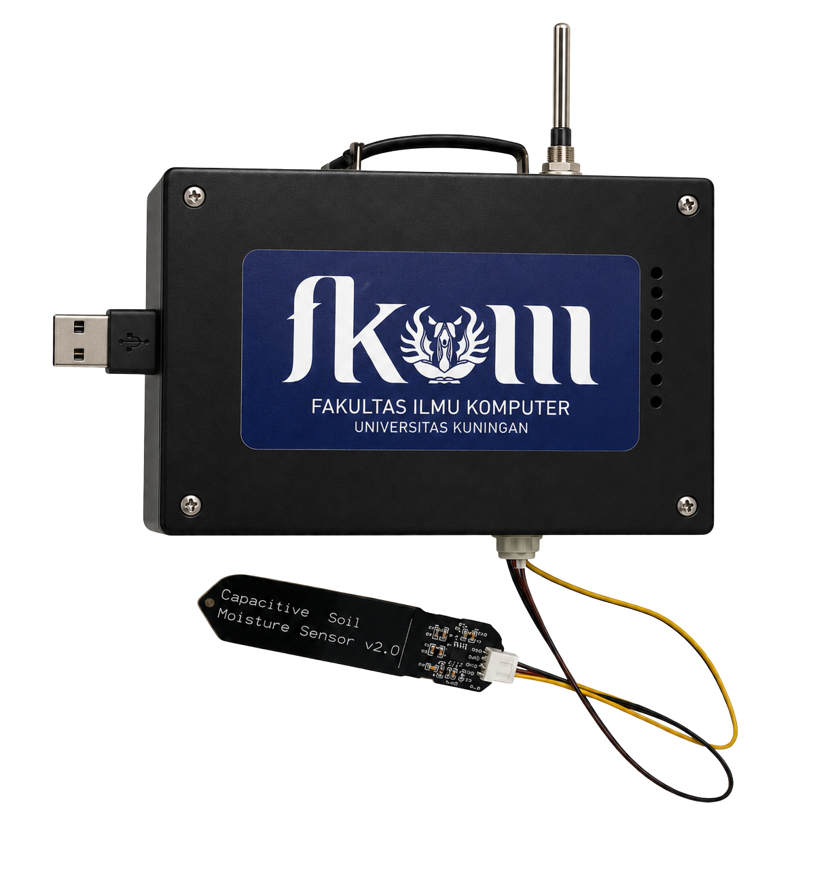
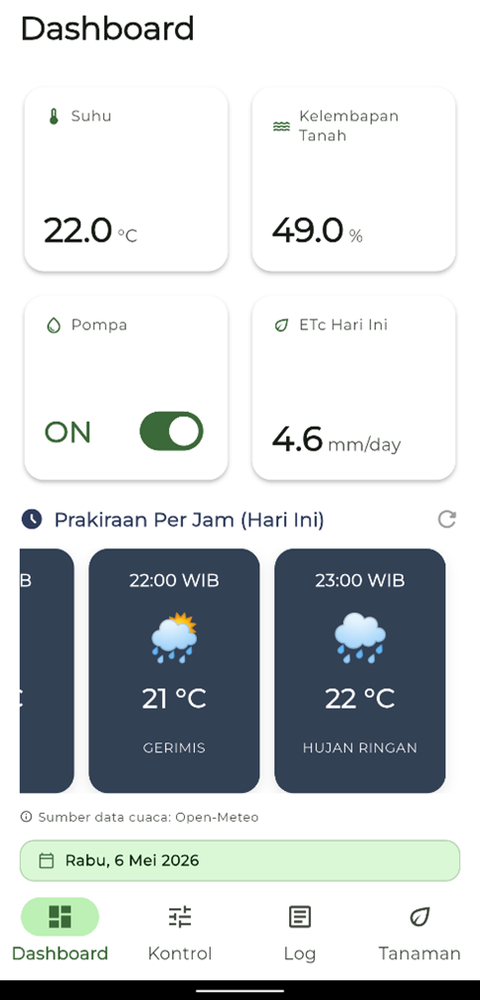

01Monitoring
Monitoring kondisi tanaman
Menampilkan informasi kondisi tanaman dan lingkungan yang dibaca oleh sensor.
Smart Drip merupakan sistem irigasi tetes berbasis IoT yang dirancang untuk membantu proses penyiraman tanaman cabai menjadi lebih terukur, efisien, dan mudah dipantau.
Fitur Smart Drip dirancang untuk membantu proses penyiraman, pemantauan, dan pengambilan keputusan sistem secara lebih terukur.
Menampilkan informasi kondisi tanaman dan lingkungan yang dibaca oleh sensor.
Sistem dapat mengaktifkan penyiraman berdasarkan perhitungan ETc dan Fuzzy Logic
Air dialirkan secara terarah ke area tanaman melalui jalur irigasi tetes.
Data utama sistem ditampilkan dalam dashboard yang mudah dibaca.
Aktivitas penyiraman dapat dicatat untuk evaluasi dan pemantauan.
Pemberian air sesuai kebutuhan tanaman dan cuaca
Sistem membantu menentukan kebutuhan penyiraman berdasarkan data yang tersedia.
Prototype Smart Drip menggabungkan box kontrol IoT, sensor suhu, sensor kelembapan tanah, konektor daya, dan kabel sensor untuk membantu proses monitoring serta penyiraman otomatis pada tanaman cabai.

Smart Drip menawarkan pendekatan yang lebih terukur melalui otomasi, pemantauan, dan distribusi air berbasis irigasi tetes.
Tampilan aplikasi Smart Drip dirancang untuk memberikan kemudahan bagi pengguna dalam monitoring dan kontrol sistem irigasi tetes.

Menampilkan ringkasan kondisi sistem, data sensor, status pompa, nilai ETc, dan prakiraan cuaca harian.